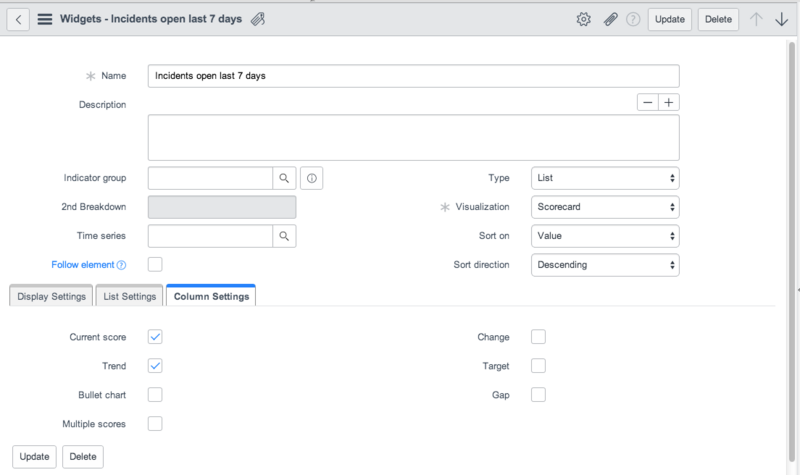

Creating Widgets
| |
Note: This article applies to Fuji. For more current information, see Performance Analytics Widgets at http://docs.servicenow.com
The ServiceNow Wiki is no longer being updated. Please refer to http://docs.servicenow.com for the latest product documentation. |
Contents
1 Overview
Widget configurations are used to view, set up, edit, and manage properties for dashboards and visualization types: time series, score, lists, and breakdowns. A widget determines how data is presented on dashboards. For example, as a chart, latest score, speedometer, dial, scorecard, or column. Widgets are always linked to an indicator.
Users with the pa_admin and pa_power_user roles can create and manage widget configurations.
Widgets are global, so:
- anyone can see a widget you created
- anyone can use the widget when creating their dashboard
- anyone can edit your widget
Useful hints:
- Always create a new widget when you need an alternate view.
- Do not change an existing widget when you did not create it.
2 Creating Widgets
To create a new widget:
- Navigate to Performance Analytics > Widgets.
- Click New.
- Enter a Name by which you can easily identify what the widget does. For example, Last score number of open incidents.
- [Optional] Enter a more detailed Description, for example, Widget to represent the last score of open incidents.
- Select the Type of widget you want to create. Choices are Time Series, Score, List, and Breakdown.
- Fill in the rest of the form according to the Type and Visualization you select. For more information about filling out the fields for a specific type, see the linked section.
{kind=link}
2.1 Creating a Time Series Widget
To create a time series widget:
- In the Type field of the Widget Configuration form, select Time Series.
- In the Visualization field, select the appropriate option. Choices are:
- Line Chart
- Column Chart
- Spline Chart
- Area Chart
- Step Chart
- Stacked Column Chart
- Select an Indicator. For example, Number of open incidents.
- [Optional] Select Previous period chart if you want to compare data from previous periods side-by-side. This can be used, for example, to compare the number of open incidents per week. Each week is represented in a different color in the same chart for the number of weeks you selected. Available starting with the Eureka release.
- In the Previous Period Settings section, enter the Range of periods. Choices are: Years, Quarters, Months, or Weeks. This field is only shown if you selected the Previous period chart field. Available starting with the Eureka release.
- Enter the Number of periods. This field is only shown if you selected the Previous period chart field. Available starting with the Eureka release.
- [Optional] Select the Breakdown to show a chart for a specific breakdown element, for example, Category.
- [Optional] Select which Element to show, for example, Software. If you do not select an Element, "null" is returned, meaning that the unmatched breakdown element is displayed.
- [Optional] Select the 2nd Breakdown if you want to show a chart for a second level breakdown element, for example, Priority. Available starting with the Fuji release.
- [Optional] Select which Element to show for the second breakdown, for example, 1 - Critical. If you do not select an Element, the unmatched level 2 breakdown element is displayed. Available starting with the Fuji release.
- [Optional] Select a Time series (Indicator time series in Eureka). For example, a running sum, an average, or a total sum for a specific period. The period you choose must be in accordance with the Frequency of the indicator. If, for example, the indicator's frequency is Daily, the time series must also have the interval Day, and so on.
- [Optional] Select Follow element to show a selected breakdown rather than the general scores for the indicator. Available starting with the Fuji release.
- [Optional] If Follow element is selected, select a breakdown to follow in the Followed breakdown field. The parent breakdown and excluded breakdowns are not shown in the selection. Available starting with the Fuji release.
- Enter a Label for the main series label (Main series label in Eureka). The main series label can be used to easily search for similar widgets to be added to a dashboard. Only shown if you did not select Previous period chart.
- Select the Color (Chart color in Eureka) from one of the default color definitions or create your own color definition. If no chart color scheme is selected, the default color scheme from the properties is used to render charts.
- In the Date Settings section, set the Period. The default is 3m (3 months). Select max to use scores up to the current date. Select between and then fill in the From and To fields to define a time period for which scores are shown. Date settings are only available if you selected a Time series (Indicator time series in Eureka).
- [Optional] In the Date Settings section, select Show date range selector if you want to show a date selector on the resulting chart. This allows you to select a 7d, 1m, 3m, 6m, YTD, 1y or all range for the scores displayed in the chart. This also enables you to click and drag a selection on the chart to zoom into that selection. Available starting with the Fuji release.
- In the Axis Settings section, in the Y-axis from and Y-axis to fields, specify a range of values for the scores on the vertical axis on the left side of the chart. For example, 1 to 100.
- In the 2nd Y-axis from and 2nd Y-axis to fields, specify a second range of values for the scores on the vertical axis on the right side of the chart. For example, 1 to 1000.
- The 2nd Y-axis can be used if scores normally move between a limited bandwidth, but you have some exceptions that would otherwise distort the chart. For example: a bandwidth of 40 to 60, with an exception of 1000.
- In the Display Settings section, select Show target (Include target in Eureka) if you want to compare the scores of this chart with the target scores (if defined). Only shown if you did not select Previous period chart.
- Select Show thresholds if you want to show thresholds, like an all time high, or an all time low. Only available if thresholds have been defined for this indicator. Available starting with the Fuji release.
- Select Show data labels if you want to show the scores for the data points in the chart. Available starting with the Fuji release.
- Select Show trend (Include trend in Eureka) if you want to include the trend line in this chart. Only shown if you did not select Previous period chart.
- Select Show confidence bands if you want to include confidence bands in this chart. Available starting with Eureka Patch 3 Hotfix 1.
- Select Show comments to display comments for data points in the chart. Only available if comments have been added. Available starting with the Fuji release.
- Targets, thresholds, trends, confidence bands, and labels can be toggled with the Chart settings in the scorecard.
- Click Submit.
After submitting the widget, you can reopen the Widget Configuration form and use the Widget Indicators related list to add more indicators for this widget. You could for example have an area chart displaying the indicator Number of open incidents and then add the widgets to display a second or even a third indicator, for example, Number of open incidents not worked on in the last 30 days and Number of open incidents not updated in the last 5 days. For these additional widget indicators, similar configuration options are available as for the main indicator widget. You could have them displayed as an area chart, or as lines within the area chart for Number of open incidents.
{kind=link}
2.2 Creating a Score Widget
To create a score widget:
- In the Type field of the Widget Configuration form, select Score.
- In the Visualization field, select the appropriate option.
- Choices are:
- Latest Score: shows latest score of an indicator as a dial.
- Speedometer: measures the performance of a single indicator in the form of a meter.
- Dial: shows a dial for an indicator. This is similar to a regular speedometer, but it shows a round meter where the part in which scores are shown is filled out with a color. Available starting with the Fuji release.
- Select an Indicator, for example, Resolved incidents.
- [Optional] Select the Breakdown to show a chart for a specific breakdown element, for example, Category.
- [Optional] Select the Element to shown if Breakdown is selected, for example, Software. If you do not select an Element, "null" is returned, meaning that all breakdown elements are displayed.
- [Optional] Select the 2nd Breakdown to show a chart for a second level breakdown element, for example, Priority. Available starting with the Fuji release.
- [Optional] Select the Element to show for the second breakdown. For example, 1 - Critical. If you do not select an Element, the widget uses the unmatched breakdown element. Available starting with the Fuji release.
- Select a Time series (Indicator time series in Eureka) if you want to use, for example, a running sum, an average, or a total sum for a specific period.
- [Optional] Select Follow element to show a selected breakdown rather than the general scores for the indicator. Available starting with the Fuji release.
- [Optional] If Follow element is selected, select a breakdown to follow in the Followed breakdown field. The parent breakdown and excluded breakdowns are not shown in the selection. Available starting with the Fuji release.
- If you selected Latest Score in the Visualization field, select a Compare score with option. Choices are:
- Previous Score: compares the score with the score from the previous data collection.
- Periods Back: compares the score with the Number of periods back entered. For example, if you enter 3 the score is compared with the score that was retrieved three months ago.
- If you selected Speedometer or Dial in the Visualization field, select the Auto scale check box if you want to autoscale the dial. The start and end values for the dial are automatically determined, depending on the data. For example, if four P1 incidents are collected, the scale runs from zero to six. If Auto scale is not selected, you have to enter the start value in From and the end value in To.
After submitting the widget, you can reopen the Widget Configuration form and use the Widget Indicators related list to add more indicators for this widget.
{kind=link}
2.3 Creating a List Widget
To create a list widget:
- In the Type field of the Widget Configuration form, select List.
- In the Visualization field, select the appropriate option. Choices are:
- Scorecard: shows the data for one or more indicators in card layout for a certain time span, with an optional mini graph for each indicator showing the trend in which it moves.
- Spider: shows the values of each category along a separate axis that starts in the center and ends on the outer ring. This option is also known as a radar or star chart.
- In the Sort on field, select either by Value, Name or Custom order as the sort sequence for scorecards.
- In the Sort direction field, select Ascending or Descending.
- Select a Time series (Indicator time series in Eureka). If you want to use a running sum, an average or a total sum for a specific period, select for example, 28 days running SUM.
- Select an Indicator group, for example, incident open. All indicators with this indicator group will be included in the list. In the Widget Configurations search, you can search for Indicator group.
- [Optional] Select Follow element if the chart should show the selected breakdown, rather than the general scores for the indicator. Available starting with the Fuji release.
- [Optional] Select the Followed breakdown. Only shown if you selected Follow element. The parent breakdown and excluded breakdowns are not shown in the selection. Available starting with the Fuji release.
- In the List Settings section, select what the list should look like on the dashboard. Choices are:
- Scorecard options: Select All scorecards, scorecards marked Key, or Favorite scorecards to show the selected scorecards on the dashboard.
- Page size: Select the number of rows shown on the list scorecard: 5, 10, 15 or 20. Available starting with the Fuji release.
- Filter: Filter the scorecard list for Best Performing, Worst Performing, Improved, or Deteriorated. Only indicator scores that match the filter are shown.
- The Filter field is only shown if you selected Scorecard in the Visualization field.
- Select the check box for each column to display for the list scorecard (see table).
- The Column Settings section is shown only if you selected Scorecard in the Visualization field.
| Field | Description |
|---|---|
| Current score | The score from the latest data collection. |
| Trend | Displays a column with the direction the indicator is moving in. The trend is shown in a mini-chart on the dashboard. |
| Bullet chart | This option is only visible if the widget has a Visualization of Scorecard and has a defined target. The grey tones of the bullet are the boundaries of the traffic colors. For less is better indicators the color coding moves from light to dark. A light color is acceptable, a dark color is unacceptable. For more is better indicators the color coding moves from dark to light. The target is always represented by a red horizontal line. Bullet charts for scorecards are available starting with the Fuji release. |
| Multiple scores | Adds additonal scores to the scorecard. Select the number of additional scores to display in Number of periods. Select the length of each period in Period step. If Current Score is also selected, the Score column is counted as the most recent period and N-1 periods are added. |
| Change | Displays the change in value from the previous score. |
| Target | Displays a column with the target for the indicator, if a target has been defined. |
| Gap | Displays the difference between the current and the target scores. Gap can be either positive (moving towards the target) or negative (moving away from the target). |

.
{kind=link}
2.4 Creating a Breakdown Widget
Breakdown widgets are typically used to zoom in on a particular instance of an indicator. For example, a visualization based on the Priority breakdown for open incidents.
Visualizations based on breakdowns allow showing a percentage of the total/selected scores. Element filtering in a breakdown widget configuration allows users to display only elements that match a pre-defined breakdown source filter.
To create a breakdown widget:
- Select an Indicator, for example, Number of open incidents.
- Select a Breakdown, for example, Priority. Selecting a Breakdown is mandatory when configuring a breakdown widget.
- Select which Element must be shown, for example, 1 - Critical. If you do not select an Element, "null" is returned, meaning that all breakdown elements are displayed.
- [Optional] Select the 2nd Breakdown if you want to show a chart for a second level breakdown element, for example, Age. Available starting with the Fuji release.
- Select which Element must be shown for the second breakdown, for example, time bucket 01 - 05 Days. If you do not select a second level Element, the widget uses the unmatched breakdown element. Available starting with the Fuji release.
- Select an Time series (Indicator time series in Eureka) if you want to use a running sum, an average, or a total sum for a specific period. For example, 28 days running SUM.
- [Optional] Select Follow element if the chart should show the selected breakdown, rather than the general scores for the indicator. Available starting with the Fuji release.
- [Optional] Select the Followed breakdown. Only shown if you selected Follow element. The parent breakdown and excluded breakdowns are not shown in the selection. Available starting with the Fuji release.
- In the Type field of the Widget Configuration form, select Breakdown.
- In the Visualization field, select the appropriate option. Choices are:
- Scorecard
- Pie
- Donut: Available starting with the Fuji release.
- Semi Circle Donut: Available starting with the Fuji release.
- Funnel: Available starting with the Fuji release.
- Pyramid: Available starting with the Fuji release.
- Column
- Pareto
- Line
- Column and Total
- Stacked Column
- Relative Compare: Available starting with the Fuji release.
- Pivot Scorecard: Available starting with the Fuji release.
- The fields you have to enter in the settings vary according to the visualization you selected.
- Select an option in the Sort on field, either by Value, Name, or Default.
- Select the Sort direction, either Ascending or Descending.
- In the Display Settings section, select Show data labels if you want to show the scores for the data points in the chart. Available starting with the Fuji release.
- In the Date Settings section, set the Period. The default is 3m (3 months). Select max to use scores up to the current date. Select between and then fill in the From and To fields to define a time period for which scores are shown.
- The Period field is only shown if you select Column, Line, Column and Total, or Stacked Column as the Visualization.
- [Optional] In the Date Settings section, select Show date range selector if you want to show a date selector on the resulting chart. This allows you to select a 7d, 1m, 3m, 6m, YTD, 1y or all range for the scores displayed in the chart. This also enables you to click and drag a selection on the chart to zoom into that selection. Available starting with the Fuji release.
- In the Breakdown settings section, select what the breakdown should look like on the dashboard. Choices vary according to the selected Visualization, and include:
- Elements filter: Defaults to Any element. An element is an instance of the breakdown. For example, instances of the breakdown Priority can be: Critical, High, Moderate, Low or Planning.
- Manual elements: Breakdown elements can be selected automatically or manually. Select the Manual elements check box to display the Widget Elements related list for adding elements. Clear the Manual elements check box to automatically use the elements that belong to the breakdown.
- Page size: Select the number of rows shown on the breakdown scorecard: 5, 10, 15 or 20. Only available if Scorecard is selected in the field Visualization, starting with the Fuji release.
- Show top x: If there are many breakdown instances, the breakdown chart may become too large. Enter a number to show only the top x of the instances. The maximum Number of elements in the breakdown charts can also be specified at System > Properties. The top x cannot be larger than the number entered there.
- Percentages: If you select No percentages, no score percentages are shown for the instances. If you select Percentage of elements, a score percentage is shown for each instance. For example, 6.4% of the total incidents are Critical, 11.8% are High, and so on.
- Show indicator: If you selected Scorecard in the Visualization field, an extra row can be included in the breakdown chart showing the totals for the indicator.
- Show bar: The score for each instance is represented by a bar.
- Color scheme: select a color scheme from one of the default color definitions, or create your own color definition. If no chart color scheme is selected, the default color scheme from the properties is used to render charts.
- The Color scheme field is shown for all visualizations except Scorecard, and Pivot scorecard.
- Select which columns to display for the breakdown scorecard (see table).
- The Column Settings section is only shown if you selected Scorecard in the Visualization field.
| Field | Description |
|---|---|
| Current score | The score from the latest data collection. |
| Trend | Displays a column with the direction the indicator is moving in. The trend is shown in a mini-graph on the dashboard. |
| Bullet chart | This option is only visible if the widget has a Visualization of Scorecard and has a defined target. The grey tones of the bullet are the boundaries of the traffic colors. For less is better indicators the color coding moves from light to dark. A light color is acceptable, a dark color is unacceptable. For more is better indicators the color coding moves from dark to light. The target is always represented by a red horizontal line. Bullet charts for scorecards are available starting with the Fuji release. |
| Multiple scores | Adds additonal scores to the scorecard. Select the number of additional scores to display in Number of periods. Select the length of each period in Period step. If Current Score is also selected, the Score column is counted as the most recent period and N-1 periods are added. |
| Change | Displays the change in value from the previous score. |
| Target | Displays a column with the target for the indicator if a target has been defined. |
| Gap | Displays the difference between the current and the target scores. Gap can be either positive (moving towards the target) or negative (moving away from the target). |
{kind=link}
After creating widgets, navigate to Performance Analytics > Dashboards to add the widget to a dashboard. You can check if the widget definition works and looks like you intended.